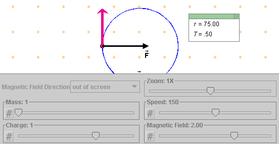

Prerequisites
Students should be familiar with the concepts of magnetic field, charge, and force, and be familiar with acceleration in uniform circular motion (centripetal acceleration) and Newton's second law of motion.
Learning Outcomes
Students will develop an understanding of the force (magnitude and direction) exerted by a magnetic field on a charged particle and of how this force affects the motion of the particle. They will learn that the motion is circular if the field is uniform and if the particle's velocity is at right angles to the field. They will learn to calculate the radius and period of the circular orbit and will gain additional experience in using Newton's second law of motion and the kinematics of uniform circular motion.
Instructions
Students should know how the applet functions, as described in Help and ShowMe.
The applet should be open. The step-by-step instructions in the following text are to be done in the applet. You may need to toggle back and forth between instructions and applet if your screen space is limited.
 The Force Exerted by a Magnetic Field on a
Charged Particle
The Force Exerted by a Magnetic Field on a
Charged Particle
 Calculating the Radius and the Period
Calculating the Radius and the Period

The Force Exerted by a
Magnetic Field on a Charged Particle
Question. On what physical quantities does the force exerted on a particle in a magnetic field depend, and how does it depend on these quantities?
We must expect this dependence to be different from that for the force on a particle in an electric field. Otherwise there would be nothing to distinguish the two kinds of fields.
Answer. Let us try to find the answer "experimentally" by using the applet. Let's investigate a possible dependence of the force on the following quantities:
 of the particle,
of the particle, .
.We need to vary all four quantities and see how the force changes as a result.
One quantity is left out in the list above: the particle's
position. The reason is as follows. The force should not
explicitly depend on the position of the particle because space is
assumed to be the same everywhere. Implicitly, the force could
depend on position if the magnetic field vector were different at
different points in space. However, such dependence on position
through the magnetic field is taken care of by studying the
dependence of the force on the magnetic field vector .
Note that the applet assumes that the magnetic field is uniform and that there is no gravitational force acting on the particle.
 the applet.
the applet.
Make the following settings:
: magnitude 2.0 T, direction out
of screenClick Play  , and Pause
, and Pause  the particle's motion at the point
shown in Figure 1 below. It does not matter if you stop the
particle at a slightly different point. Display the velocity
vector (magenta).
the particle's motion at the point
shown in Figure 1 below. It does not matter if you stop the
particle at a slightly different point. Display the velocity
vector (magenta).

Figure 1
You should be able to observe that the particle moves in a circular orbit and that it manintains a constant speed in doing so. These are just eye-balling observations, but in a laboratory one could confirm these observations by real measurements. The applet gives a value of 75.0 m (the unit "m" is not indicated) for the radius r of the orbit.
How can we use these observations to find out about the force exerted on the particle by the magnetic field?
We know from kinematical studies of uniform circular motion that the acceleration in such motion is in the direction from the particle towards the center of the circle, at any given moment. One says the acceleration is "centripetal", a word derived from Latin meaning "center-seeking".
By Newton's second law, the net force is in the same direction as the acceleration. Therefore the net force too must be in the direction from the particle to the center of the circle. In the applet, there is only one force acting on the particle: the force exerted by the magnetic field. Therefore the magnetic force is equal to the net force and therefore directed from the particle towards the center of the circle, which is in the direction of the black arrow in Figure 1.
Click Play again and Pause at another point in the orbit. Think about the direction of the force in relation to that of the velocity at that point. The force will again be perpendicular to the velocity.
This is quite different from the situation of a charged particle moving in an electric field. Does the force in that case have any relationship to the particle's velocity? No, the force is always in the direction of the electric field (if the charge is positive), no matter what the velocity is.
What about the direction of the force in relation to that of the magnetic field? Is it in the direction of the magnetic field? No! The magnetic field is perpendicular to the screen towards the viewer while the force direction is in the screen at all times while the particle is moving in its circle. Thus, when the velocity is perpendicular to the magnetic field, the direction of the force is perpendicular to the magnetic field as well.
Summary. In the situation that we have investigated, where a charged particle is moving at right angles to a magnetic field, the force exerted on the particle by the field is perpendicular to both the particle's velocity and the field.
Although the applet does not let you investigate this, it is true that the magnetic force is always perpendicular to both the particle's velocity and th e magnetic field, no matter in what direction the particle is moving.
The preceding statement does not completely define the direction of the force. There is still an ambiguity because a perpendicular has two directions. This ambiguity is resolved by the following right-hand rule.

Figure 2
The force is normal (perpendicular) to the plane spanned by
vectors and .
The only question is: "Along which normal is it?" There is one normal sticking out of one side of a plane and another normal sticking out on the other side. The right-hand rule illustrated in Figure 2 lets you decide which normal it is.
Hold your right hand flat with outstretched fingers in the
direction of the velocity and with
the thumb pointing off to one side in a direction perpendicular
to the plane spanned by and
. There are two such directions
in which the thumb could point. Which is the right one?
The right direction for the thumb is the one in which your
palm faces in the direction of vector . When you curl the fingers of your right hand,
they should curl towards . The
thumb will then be pointing in the direction of the magnetic
force  .
.
If your palm faces in the wrong direction, rotate your hand
by 180o around the axis that points along the
outstretched fingers. E.g., if
were into the screen rather than out of the screen, with as in Figures 1 and 2, the palm
would have to be turned by 180o to be facing in the
direction of and the thumb and
the force would be to the left
rather than to the right.
Exercise 1. Draw a vector and a vector on
a sheet of paper, and hold the paper at some angle. Use the
right-hand rule to find the direction of the magnetic force.
Hint: The force is perpendicular to the plane of the paper.
Note. In a separate Advanced Lesson titled "Vector Equation for the Magnetic Force" you will find an explanation of how to represent the magnetic force as a vector product. The vector product allows a general description of the magnetic force, of its direction and magnitude, that covers all cases.
F = m a.  (1)
(1)
In uniform circular motion, the magnitude a of the acceleration is equal to
a = v2/r  (2)
(2)
where r is the radius of the circular orbit and v the particle's constant speed. Substituting Expression (2) into Equation (1) gives us the following measure of the magnitude of the magnetic force:
F = m v2/r.  (3)
(3)
The applet displays the value of r. In the laboratory, we would be able to measure r. The values of m and v are set by us. So we can measure F by determining the value of the right-hand side of Equation (3).
For the setting used so far,
: magnitude 2.0 T, direction out
of screen,the Data Box gives r = 75.0 m (the unit "m" is not displayed) which, via Equation (3), implies
F = m v2/r = 1.0
x 1502/75.0 = 300 N.  (4)
(4)
F = m v2/r = 2.0
x 1502/150.0 = 300 N.  (5)
(5)
F is the same as before! The force does not depend on the mass.
F = m v2/r = 1.0
x 3002/150.0 = 600 N.  (6)
(6)
F = 600 N is twice the value found in calculation (4). Thus, doubling the speed doubles the magnitude of the force. Let's guess that the magnitude of the force is proportional to the speed. You may want to verify this by measuring F for different values of the speed.
Thus, one obtains the result
F = |q| v B  if
if 
 .
.  (7)
(7)
Comment 1. One must take the absolute value |q| of the charge in this equation because q can be negative while F is positive by definition.
Comment 2. The SI-unit of the magnetic field, the tesla (T), is chosen so that the proportionality constant in Equation (7) is 1. The size of the tesla is defined by Equation (7).
Exercise 2. Rewind the applet. Use the Magnetic Field Direction toggle button to set the magnetic field direction so that it is in the screen and to the right. Then Play the motion. What kind of motion do you observe? What magnetic force is exerted on the particle in this case? Contrast your observation with what you know to be true when a charged particle is moving in an electric field.
You should find
F = 0  if
if  || .
|| .
 (8)
(8)

Make the following settings:
: magnitude 2.0 T, direction out
of screenThe Data Box shows for the radius r of the circular orbit and the period T the values reproduced in Figure 3 below.

Figure 3
Question 1. How would you calculate the radius r?
Answer. When expression (7) for F is substituted into Equation (3), one obtains the following equation involving r:
|q| v B = m
v2/r .  (9)
(9)
One factor of v can be cancelled on both sides. Solving the resulting equation for r gives
r = mv/(|q|B) .  (10)
(10)
You should be able to confirm by substituting the given values into Expression (10) that r = 37.5 m. Thus, the Data Box displays the value of the radius in SI-units.
Note. The sliders for m, v, q, and B in the applet are arranged in the same order in which they appear in Expression (10) for r.
Question 2. How would you calculate the period of the motion?
Answer. The distance s traveled during one period T is equal to the circumference of the circle, which is equal to 2π r. Since the speed v is constant in this motion and therefore equal to the average speed, we can write
v = (distance traveled)/(time elapsed) =
2π r/T .  (11)
(11)
Substituting Expression (10) for r into Equation (11) gives
v = 2π
mv/(|q|BT).  (12)
(12)
Canceling the factor v on both sides and solving the resulting equation for T gives
T = 2π
m/(|q|B).  (13)
(13)
Substituting the given values gives
T = 2π x
1/(2x2) = 2π x 0.25 . (14)
(14)
The Data Box displays as the value of T only the factor 0.25. The factor 2π is omitted. All quantities in the applet other than the period may be interpreted as expressed in SI-units. However, the value of T in the Data Box cannot be interpreted in seconds, because of the omission of the factor 2π. The factor is omitted to be able to present simpler values for T. Thus, to obtain the value for the period in seconds, take the value displayed in the Data Box and multiply it by 2π.
Observation. Equation (13) for the period does not involve the speed of the particle. As long as the mass and charge of the particle are held fixed, which they would be for a given kind of naturally occuring particle, then all particles of this kind complete their circular orbits with the same period no matter what speed they have, as long as the magnetic field stays the same.
Verify this with the applet by varying v while keeping all other settings fixed.
This fact was crucial for the development of the cyclotron in the early 1930's, a machine used to accelerate protons. In a cyclotron, the protons are moving in orbits at right angles to a uniform magnetic field. Twice in every orbit they receive a kick by traversing a gap containing an electric field. As the protons are getting faster, their periods do not change. This makes it possible to accelerate them at constant time intervals, which was a technical necessity at the time.